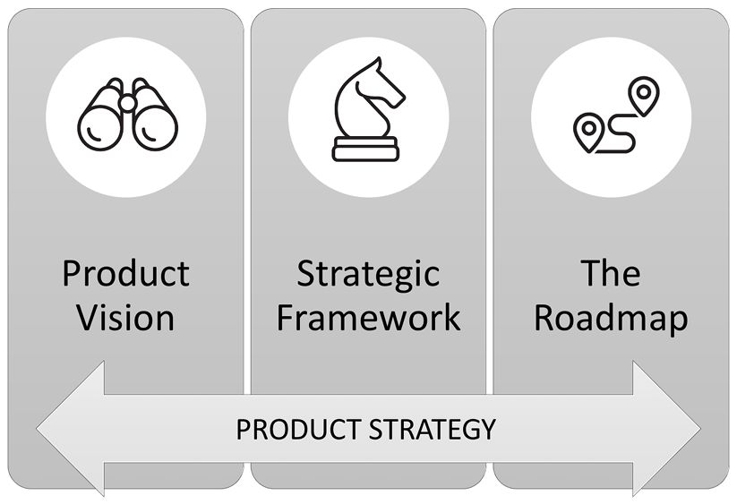

Chapter 14
Companies have limited resources, and the "best" products don't always win. It doesn't matter how fast you move if you're going in the wrong direction. It doesn't matter how well-designed your product is if people don't use it.
That's why, at some point in your career, you'll probably hear that you need to be more strategic. It might leave you wondering, "Now what?"
When I first got this feedback, it was a gut punch. If I'm bad at strategy, how can I ever be an amazing PM?
But I misunderstood something that was very, very important.
Strategic skills are not innate; I could learn them. I could dissect the key components—vision, strategic framework, and roadmap—and learn tangible practices to improve them. I could solicit input from key sources, follow trends, evaluate risks, and pull these together into a clearer direction for the product.
Saying "you need to be more strategic" isn't like saying, "you're bad at math and always will be." It's more like saying, "you don't know geometry and you should learn it." This is a skill that you can learn—and that's what this chapter, and this part, is about.
What does it mean to be strategic?
Being strategic is about deciding where you want the product to go and making a plan to get there. It's about understanding the industry, market, and trends to predict what will be important in the future. It's about creating a vision, setting ambitious goals, and convincing your team that you're heading in the right direction. It's about evaluating different approaches and picking the best one. It's about sharing ideas for the big opportunities your team should work on next. It's about laying out the steps that get your team from start to finish.
Early in your career, you usually work with the strategy that was created by your product leader. You probably have some kind of framework for how you're choosing projects and prioritizing work, but you haven't advocated for that framework or painted a bold picture of the long-term goal that your team is working towards. Typically, while you help craft the details of your team's goals, you don't set the direction.
As you advance in your career, you'll need to expand your strategic skills. You'll need to be able to identify and research new strategic opportunities. You'll be expected to create a vision for addressing those opportunities and define what success looks like in ways that go beyond the pre-existing plan. You should be able to create a long-term roadmap that shows how all of the work fits together to achieve ambitious results. You should also be able to communicate clearly to drive alignment on the strategy and ensure that everyone on the team understands what they're working towards.
Since it can be difficult to understand what being strategic means, here are a few examples.
Alignment with company strategy
If you're getting feedback that you're not strategic enough and can't figure out why, try showing the list to your manager and ask about the areas in need of focus.
There's no standardized definition of what a product strategy is.
As you might imagine, this can create a lot of confusion. Many PMs think they have a strategy, and yet their manager keeps telling them they need to create a strategy. What's going on?
There are three separate components that can make up a strategy. When there's confusion, it's usually because one of them is missing.
The three components of a product strategy are the product vision, the strategic framework, and the roadmap.

Often, the head of product or CEO creates a strategy for the entire company, directors create a more focused strategy for their group, and individual PMs create even more focused strategies for their teams. This section will describe what you need to know about each component and how to create your own product strategy.
The product vision is an inspiring description of the future we want to head towards. It could be high fidelity like a demo video, low fidelity like a storyboard, or even something as simple as a one-sentence vision statement.
A great product vision includes some specific details, insights, or opinions that bring the vision to life. The details will change over time, but the vision provides a North Star that the team and customers can get excited about.
Why have a product vision? The product vision inspires people and helps them quickly understand what they are working towards. It helps them understand how all of the individual pieces of work add up to something meaningful. Once they're bought into the vision, people will work hard to achieve it.
Chapter 15: Vision goes into this in more detail.
The strategic framework is like the spec for your strategy.
It includes the high-level framing, goals, and principles of the strategy. It describes the target market. It talks about what bets you're making and why.
The framework aligns people to the approach for achieving your vision. When done well, it helps people remember the important parts of the strategy—for example, with concise taglines and memorable names for important concepts.
Why have a strategic framework? When people understand the framework, they're empowered to make good, fast decisions on their own. Also, if the framework is clearly defined, any erroneous assumptions can be more easily identified and fixed.
Chapter 16: Strategic Framework goes into this in more detail.
The roadmap is the prioritized, sequenced, and roughly-costed plan of work that leads to achieving the vision. The roadmap shows which steps come first and which key milestones come next. It gives a rough sense of the scale of the problem (e.g., will it take a year or ten years to achieve the vision?).
Why have a roadmap? The roadmap aligns people on the steps it will take to achieve the vision. The details of the roadmap will change over time, but the concreteness of the roadmap helps ground people on how much work is required and how many people need to be hired. The roadmap also provides a baseline against which to track progress, so that the team can assess if the current plan is working or needs to change.
Chapter 17: Roadmapping and Prioritization goes into this in more detail.
You don't need to own an entire product to create a product strategy. You can, and should, create a strategy for any scope that encompasses multiple launches. Smaller strategies should ladder up to the broader strategies.
Creating a product strategy should be a collaborative process. You want to focus on getting buy-in from all of the important stakeholders. After all, the point of a strategy is to align people in a common direction. That said, most stakeholders will not be deeply involved in the day-to-day creation of the strategy.
Many PMs get stuck feeling that they don't have enough time for strategic thinking. There's a ton of urgent work and they already feel like they're behind.
If you haven't already, go read Chapter 13: Get Things Done .
To make time for strategic work, a PM needs to make the mindset shift from "I'm a great PM for my team" to "I'm a great PM for my whole company.''
You already show a small version of this mindset when you balance the needs of different members of your team. I never hear PMs say they can't make time for their designer because the engineers need them so much, or vice versa. No one likes to disappoint a teammate, but PMs know they need to support the whole team.
Imagine that your immediate team is one of your teammates, and the company is another teammate. You can't take the side of your team over what's best for the company. You need to support both.
Once you've made the mindset shift from being a great PM for your team to being a great PM for your company, making time should become much easier. You still won't want to drop work that would help your team, but it becomes an option you can consider against the tradeoffs.
Understand the importance of strategic work
Since making time is a tradeoff, you need to start by understanding how important strategic and visioning work is.
For many teams, visioning is critical. Imagine if the team at Apple had been so caught up in the day-to-day work of designing the new iPod that they didn't take a step back and realize they should be designing an iPhone instead.
You can always find incremental work to do by continuing along the current path. There will always be more customer requests to satisfy and more features to build. But, maybe there's a new direction that would deliver even more impact.
By the time your current project wraps up, it will be too late to pursue innovative new directions for the next cycle. If you want to reconsider the strategy, you need to start early enough.
What if the engineering lead says you can't spare any time for strategic work?
Here's the truth about your execution work: it will always expand to fit the amount of time you give it.
There are times you need to focus on execution, for example when a big launch is coming up. But, most of the time your team and the company will be better off if you make some time for strategic thinking.
Talk to your engineering lead and listen to their concerns. Once you know the concerns, you can handle them appropriately.
Some possible scenarios include:
Remember that strategy is an important piece of being an effective PM, and it's important that you prioritize it appropriately.
Creating a strategy usually doesn't take as long as many people fear.
Here are some quick approaches that can work well when you have a small area that isn't too controversial or mission-critical:
The next section covers the approach for larger areas that are more critical or more controversial.
When your team is small, you can often get by with drafting a strategy alone and then asking the team for feedback.
When the stakes get higher, the team gets bigger, or controversy builds, then it's important to create the strategy collaboratively.
Here is a process for creating strategies from Asana's Head of Product, Alex Hood.
Step 1: Dive into lots of input
A strategy should not be designed in a vacuum.
Review the strategies and vision that this strategy will contribute to (for example, the company strategy). Does this strategy build upon or enhance the declared product strategy? At a minimum, it should tie to it directly. Better, it accelerates the overall product strategy.
Review pertinent insights from customers, tests run, competitive analysis, or any other sources. Go broad on getting inputs without burning too much time upfront.
The kickoff sets the tone for the process. People might be nervous about creating a new strategy, but you can set them at ease.
Have the right stakeholders at the meeting. You can create a DACI chart (see Step 2: Clarify the decision-maker and other roles in Chapter 21 ) . Share summaries of what you learned by reviewing new insights. Share how this new strategy will layer into existing higher-level visions or strategies so that no one thinks you are reinventing the wheel. People will be more supportive of strategy work that enhances prior art.
Some questions to ask at the kickoff include:
Establish a timeline with key objectives and check-ins.
Step 3: Checkpoint 1—key hypotheses
A product strategy entails several key hypotheses—the assumptions or assertions that drive your product decisions. For example, you might have hypotheses around a build-versus-buy decision, pricing strategy, market research, data analysis, or engineering framework.
Split these hypotheses into different workstreams (with owners and participants) so that individual teams can tackle them and report back.
At the first checkpoint, each team can present their hypothesis and the reasons they believe it. Then, come up with the most important set of key questions that are needed to validate or invalidate these hypotheses and discuss a plan how you'll figure out the answers. Keep your list small (two to seven at most). In your check-in, ask stakeholders for their thoughts and ensure people agree that you're asking the right questions.
Step 4: Checkpoint 2—draft strategies/bets
Once teams have researched each workstream, create a draft of the overarching strategies. For example, a hypothesis around freemium pricing might get solidified into a strategy to give away basic photo editing for free but charge for advanced photo filters.
Write down strong assertions. Take a stand and be controversial. Come up with several candidates for strategies. Get people to co-create, co-edit, break down, and build them up together.
As a final step, create an exercise where you winnow down the list. For example, you can let people vote on their top 30% favorite strategies. Set the context though—it isn't a democracy; their votes are input into your decision.
Beyond the core set of people working on the strategy, you'll also want to get feedback from the larger group of people who will be affected. Ask each stakeholder to be a representative of their team and to check with their team for feedback and buy-in. You don't want to get to the end of the process and learn that the engineering lead didn't let any other engineers know what was going on.
At the final checkpoint, partner with the stakeholders to declare your final strategies. This is the time to ensure the strategies are well-understood and to finalize the wording.
Then, use the balance of your time to determine the "so what?". Come in with a list of what the team might/will do differently because of these pointed strategic decisions. What new work will be started? Use your final check-in to declare and begin execution so that your strategies get traction at their first moment of inception. Starting right away will reassure the team that the effort they put into creating the strategy will have meaning, and it allows you to jump start initiatives without a pause.
You may have a set of people who need to review and approve the new strategy who might not have been involved in the process until this point. At the very least, this usually includes your manager and your manager's manager, but could consist of a broader executive committee. They can be included in this checkpoint, or you can present your strategy to them after it.
Even though your team might have started new work based on the strategy, the strategy isn't finished until it is thoroughly communicated.
Create and roll out a communication strategy for up, down, and across the organization. Create strong visuals, decks, recordings, or documents that people can learn from and refer to. Repeat yourself often and make sure that everyone who should care about the strategy hears about it more than once.
These artifacts help you communicate efficiently in the future. They'll be included in every team's deliverables or brainstorming sessions that impacts your work. Design them to be referenced and reused.
Broadcast how you'll be doing and how you'll be keeping score and keep it up to date. This serves as a role model for accountability.
Share your strategy and evangelize it
After your strategy is approved, your job is only about half-way done. You need to come up with a communication plan to share and continually reinforce the strategy. You need to advocate for the strategy and get people excited about it.
The tech community often calls this kind of advocacy "evangelism" because you're "preaching" about your idea.
Some ideas for communicating the strategy and getting people excited about it include:
PMs and product leaders almost always underestimate how much they need to remind people of the strategy. If you think you've communicated the strategy enough, try randomly quizzing some team members on it; you might be surprised at how much work it takes to make the strategy stick. If you feel like you're constantly repeating yourself, you're probably on the right track!